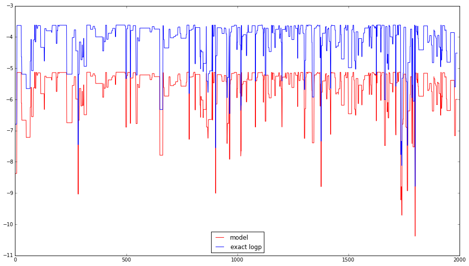

This code demonstrates an error¶
This ipython notebook has been run twice; once with pymc3 commit 912fdaa5ea56226a53744fe7d432b57e56440b24 and then re-run (keeping the output of one graph of the first run) with pymc3 commit 4bb9d47819103b7df699b87e1f35509e89eae25e.
As can be seen, the logp from the model differs. In commits 4bb9d47819103b7df699b87e1f35509e89eae25e and earlier, they are equal to the theoretical value but in commit 912fdaa5ea56226a53744fe7d432b57e56440b24 and later, they differ by a constant value(!).
Andrea Cuttone (ancu@dtu.dk) and Per Bækgaard (pgba@dtu.dk)
In [1]:
# Usual environment setup
import pylab as plt
import numpy as np
import pymc3
from pymc3 import Model, Poisson, Metropolis, DiscreteUniform, Gamma, Binomial, Exponential, geweke, Normal, Beta, sample, Uniform
from pymc3.backends.base import merge_traces
import sys
import theano
import os
%matplotlib inline
plt.rcParams['figure.figsize'] = (16.0, 9.0)
sys.setrecursionlimit(5000) # to avoid pickle exception
#theano.config.gcc.cxxflags = "-fbracket-depth=1024" # to avoid theano exception
/home/wiecki/miniconda3/lib/python3.4/site-packages/IPython/html.py:14: ShimWarning: The `IPython.html` package has been deprecated. You should import from `notebook` instead. `IPython.html.widgets` has moved to `ipywidgets`.
"`IPython.html.widgets` has moved to `ipywidgets`.", ShimWarning)
/home/wiecki/miniconda3/lib/python3.4/site-packages/IPython/utils/traitlets.py:5: UserWarning: IPython.utils.traitlets has moved to a top-level traitlets package.
warn("IPython.utils.traitlets has moved to a top-level traitlets package.")
In [2]:
# Various model and helper funtions
# calculate log factorial (up to 1000 only)
logfact = [0] + np.cumsum(np.log(np.arange(1, 1001))).tolist()
# The "model": A binomial distribution where we want to infer p
n = 1000
p_real = .3
X = np.random.binomial(n, p_real)
# The expected likelihood, when calculated analytically
def binloglike(n, p, k):
return logfact[n] -logfact[k] -logfact[n-k] + k*np.log(p) + (n-k)*np.log(1-p)
In [3]:
# A simple PyMC3 model to inter p from the observed X
niter = 2000
nburn = niter/2
logp_exact = []
logp_model = []
with Model() as model:
p = Uniform('p', 0, 1)
y = Binomial('y', n=n, p=p, observed=X)
start = {}
step = Metropolis()
trace = sample(niter, step, start, tune=nburn)
for i in range(len(trace)):
logp_model.append(model.logp(trace[i]))
logp_exact.append(binloglike(n, trace[i]['p'], X))
logp_model = np.array(logp_model)
logp_exact = np.array(logp_exact)
[-----------------100%-----------------] 2000 of 2000 complete in 0.3 sec
Plot run with commit 912fdaa5ea56226a53744fe7d432b57e56440b24 installed¶
This commit works as expected; the model logp and theoretical values are identical
In [4]:
# Plot the logp compared to the analytical value
plt.plot(logp_model[10:], label='model', color='r')
plt.plot(logp_exact[10:], label='exact logp', color='b')
plt.legend(loc='lower center')
Out[4]:
<matplotlib.legend.Legend at 0x7f61f64dcef0>

Plot run with commit 4bb9d47819103b7df699b87e1f35509e89eae25e installed¶
This commit DOES NOT work as expected; the model logp and theoretical values differ by a constant
In [5]:
# Plot the logp compared to the analytical value
plt.plot(logp_model[10:], label='model', color='r')
plt.plot(logp_exact[10:], label='exact logp', color='b')
plt.legend(loc='lower center')
Out[5]:
<matplotlib.legend.Legend at 0x7f61f6496320>
